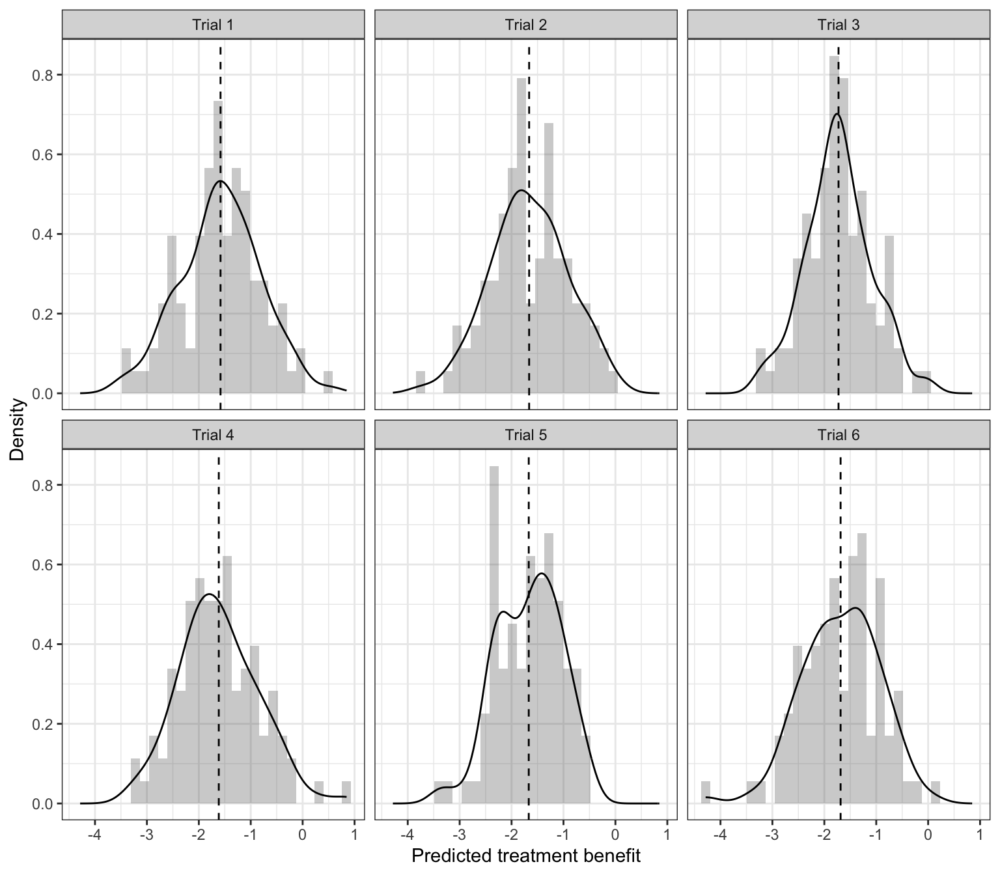

library(rjags)Chapter 18 — Modeling Personalized Treatment Effects Using Multiple Data Sources
Orestis Efthimiou ![]()
Thomas P.A. Debray
Software requirements
The Bayesian models in this chapter use the bipd package and JAGS (Just Another Gibbs Sampler).
JAGS must be installed separately from R before running the Bayesian analyses. Readers can download it from the official JAGS project page.
After installing JAGS, restart R or RStudio and verify that the interface loads successfully:
Once JAGS has been installed, the required R packages can be installed using:
install.packages(c(
"dplyr", "table1", "kableExtra", "bipd",
"ggplot2", "rjags", "coda"
))Introduction
In this chapter, we discuss statistical methods for developing models to predict patient-level treatment effects using data from multiple randomized and non-randomized studies. We will first present prediction models that assume a constant treatment effect and discuss how to address heterogeneity in baseline risk. Subsequently, we will discuss approaches that allow for treatment effect modification by adopting two different approaches in an IPD-MA context, namely the risk modelling and the effect modelling approach. For both approaches, we will first discuss how to combine IPD from RCTs comparing the same two treatments. We will then discuss how these methods can be extended to include randomized data from multiple treatments, real-world data, and published aggregate data. We will discuss statistical software to implement these approaches and provide example code as supporting information. Real examples will be used throughout to illustrate the main methods.
Estimating heterogeneous treatment effects in pairwise meta-analysis
We hereby provide code for estimating patient-level treatment effects for the case when we have patient-level data from multiple randomized trials.
Example of a continuous outcome
Setup
We start by simulating an artificial dataset using the R package bipd:
library(bipd)
ds <- generate_ipdma_example(type = "continuous")Let us have a look at the dataset:
head(ds) studyid treat z1 z2 y
1 1 1 0.8204675 -1.0156932 11
2 1 0 0.1137957 0.3709929 11
3 1 0 -1.8019514 -0.7385030 10
4 1 1 -0.2129521 -1.7080755 10
5 1 0 -0.2591890 1.9630348 11
6 1 0 1.8953560 -0.3202818 11The simulated dataset contains information on the following variables:
- the trial indicator
studyid - the treatment indicator
treat, which takes the values 0 for control and 1 for active treatment - two prognostic variables
z1andz2 - the continuous outcome
y
| 0 (N=322) |
1 (N=278) |
Overall (N=600) |
|
|---|---|---|---|
| z1 | |||
| Mean (SD) | 0.0883 (0.949) | -0.0557 (0.961) | 0.0216 (0.957) |
| Median [Min, Max] | 0.0457 [-2.39, 2.64] | -0.0576 [-2.41, 2.66] | 0.0155 [-2.41, 2.66] |
| z2 | |||
| Mean (SD) | -0.00561 (0.968) | 0.119 (1.02) | 0.0520 (0.993) |
| Median [Min, Max] | 0.0295 [-3.46, 2.62] | 0.0788 [-2.55, 2.63] | 0.0432 [-3.46, 2.63] |
| studyid | |||
| 1 | 57 (17.7%) | 43 (15.5%) | 100 (16.7%) |
| 2 | 50 (15.5%) | 50 (18.0%) | 100 (16.7%) |
| 3 | 59 (18.3%) | 41 (14.7%) | 100 (16.7%) |
| 4 | 55 (17.1%) | 45 (16.2%) | 100 (16.7%) |
| 5 | 53 (16.5%) | 47 (16.9%) | 100 (16.7%) |
| 6 | 48 (14.9%) | 52 (18.7%) | 100 (16.7%) |
Model fitting
We synthesize the evidence using a Bayesian random effects meta-analysis model. The model is given in Equation 16.7 of the book. First we need set up the data and create the model:
ipd <- with(ds, ipdma.model.onestage(y = y, study = studyid, treat = treat,
X = cbind(z1, z2),
response = "normal",
shrinkage = "none"),
type = "random")The JAGS model can be accessed as follows:
ipd$model.JAGSfunction ()
{
for (i in 1:Np) {
y[i] ~ dnorm(mu[i], sigma)
mu[i] <- alpha[studyid[i]] + inprod(beta[], X[i, ]) +
(1 - equals(treat[i], 1)) * inprod(gamma[], X[i,
]) + d[studyid[i], treat[i]]
}
sigma ~ dgamma(0.001, 0.001)
for (j in 1:Nstudies) {
d[j, 1] <- 0
d[j, 2] ~ dnorm(delta[2], tau)
}
sd ~ dnorm(0, 1)
T(0, )
tau <- pow(sd, -2)
delta[1] <- 0
delta[2] ~ dnorm(0, 0.001)
for (j in 1:Nstudies) {
alpha[j] ~ dnorm(0, 0.001)
}
for (k in 1:Ncovariate) {
beta[k] ~ dnorm(0, 0.001)
}
for (k in 1:Ncovariate) {
gamma[k] ~ dnorm(0, 0.001)
}
}
<environment: 0x122780978>We can fit the treatment effect model as follows:
samples <- ipd.run(ipd, n.chains = 2, n.iter = 20,
pars.save = c("alpha", "beta", "delta", "sd", "gamma"))
trtbenefit <- round(treatment.effect(ipd, samples, newpatient = c(z1 = 1, z2 = 0.5)), 2)Here are the estimated model parameters:
summary(samples)
Iterations = 2001:2020
Thinning interval = 1
Number of chains = 2
Sample size per chain = 20
1. Empirical mean and standard deviation for each variable,
plus standard error of the mean:
Mean SD Naive SE Time-series SE
alpha[1] 11.0071 0.04702 0.007434 0.012160
alpha[2] 8.0558 0.04737 0.007490 0.005985
alpha[3] 10.5504 0.06045 0.009558 0.011923
alpha[4] 9.6522 0.04509 0.007130 0.012483
alpha[5] 12.8793 0.05575 0.008815 0.013960
alpha[6] 15.7667 0.05694 0.009002 0.013009
beta[1] 0.1855 0.01914 0.003026 0.006376
beta[2] 0.2941 0.02576 0.004073 0.007809
delta[1] 0.0000 0.00000 0.000000 0.000000
delta[2] -1.6687 0.80951 0.127995 0.107022
gamma[1] -0.4492 0.02942 0.004652 0.007927
gamma[2] 0.5748 0.03843 0.006076 0.012175
sd 1.8365 0.37470 0.059245 0.080583
2. Quantiles for each variable:
2.5% 25% 50% 75% 97.5%
alpha[1] 10.9326 10.9833 11.0038 11.0407 11.0938
alpha[2] 7.9582 8.0295 8.0540 8.0983 8.1264
alpha[3] 10.4410 10.5071 10.5521 10.5980 10.6455
alpha[4] 9.5551 9.6374 9.6507 9.6759 9.7248
alpha[5] 12.7931 12.8446 12.8838 12.9003 13.0063
alpha[6] 15.6796 15.7286 15.7480 15.8082 15.8844
beta[1] 0.1431 0.1717 0.1907 0.1985 0.2161
beta[2] 0.2409 0.2833 0.3024 0.3076 0.3321
delta[1] 0.0000 0.0000 0.0000 0.0000 0.0000
delta[2] -3.0731 -2.1838 -1.6672 -1.1032 -0.2706
gamma[1] -0.5164 -0.4656 -0.4504 -0.4385 -0.3907
gamma[2] 0.5193 0.5451 0.5684 0.5943 0.6693
sd 1.3038 1.5094 1.8277 2.0437 2.4764Prection
We can now predict the individualized treatment effect for a new patient with covariate values z1 = 1 and z2 = 0.5.
round(treatment.effect(ipd, samples, newpatient = c(z1 = 1, z2 = 0.5)), 2)0.025 0.5 0.975
-3.28 -1.89 -0.48 This means that the predicted outcome for patient with covariate values z1 = 1 and z2 = 0.5 will differ by -1.89 units when receiving the active treatment (treat = 1) as compared to the control treatment (treat = 0).
We can also predict treatment benefit for all patients in the sample, and look at the distribution of predicted benefit.
library(dplyr)
library(ggplot2)
ds <- ds %>% mutate(benefit = NA,
study = paste("Trial", studyid))
for (i in seq(nrow(ds))) {
newpat <- as.matrix(ds[i, c("z1", "z2")])
ds$benefit[i] <- treatment.effect(ipd, samples, newpatient = newpat)["0.5"]
}
summbenefit <- ds %>% group_by(study) %>%
summarize(mediabenefit = median(benefit), meanbenefit = mean(benefit))
ggplot(ds, aes(x = benefit)) +
geom_histogram(aes(y = after_stat(density)), alpha = 0.3) +
geom_density() +
geom_vline(data = summbenefit, aes(xintercept = meanbenefit),
linewidth = 0.5, lty = 2) +
facet_wrap(~study) +
ylab("Density") +
xlab("Predicted treatment benefit") + theme_bw()
Penalization
Let us repeat the analysis, but this time while penalizing the treatment-covariate coefficients using a Bayesian LASSO prior.
ipd <- with(ds, ipdma.model.onestage(y = y, study = studyid,
treat = treat,
X = cbind(z1, z2),
response = "normal",
shrinkage = "laplace"),
type = "random")
samples <- ipd.run(ipd, n.chains = 2, n.iter = 20,
pars.save = c("alpha", "beta", "delta", "sd", "gamma"))Compiling model graph
Resolving undeclared variables
Allocating nodes
Graph information:
Observed stochastic nodes: 600
Unobserved stochastic nodes: 20
Total graph size: 6039
Initializing modelround(treatment.effect(ipd, samples, newpatient = c(1,0.5)), 2)0.025 0.5 0.975
-3.99 -1.89 -0.63 Example of a binary outcome
Setup
We now present the case of a binary outcome. We first generate a dataset as before, using the bipd package.
ds2 <- generate_ipdma_example(type = "binary")
head(ds2) studyid treat w1 w2 y
1 1 1 -2.6079814 -1.682520160 1
2 1 1 -0.4939862 0.008595669 0
3 1 1 1.1515400 1.398979134 1
4 1 0 -1.4255459 -0.751798684 1
5 1 0 0.2830816 -0.025192056 1
6 1 1 0.5530719 -1.036692366 1The simulated dataset contains information on the following variables:
- the trial indicator
studyid - the treatment indicator
treat, which takes the values 0 for control and 1 for active treatment - two prognostic variables
w1andw2 - the binary outcome
y
| 0 (N=311) |
1 (N=289) |
Overall (N=600) |
|
|---|---|---|---|
| w1 | |||
| Mean (SD) | -0.0149 (0.983) | 0.0434 (1.04) | 0.0132 (1.01) |
| Median [Min, Max] | -0.0165 [-3.07, 2.56] | 0.0729 [-2.61, 3.44] | 0.0170 [-3.07, 3.44] |
| w2 | |||
| Mean (SD) | 0.0953 (0.964) | -0.0596 (1.02) | 0.0207 (0.993) |
| Median [Min, Max] | 0.0992 [-2.63, 2.91] | -0.0281 [-2.88, 3.29] | 0.0527 [-2.88, 3.29] |
| studyid | |||
| 1 | 56 (18.0%) | 44 (15.2%) | 100 (16.7%) |
| 2 | 47 (15.1%) | 53 (18.3%) | 100 (16.7%) |
| 3 | 56 (18.0%) | 44 (15.2%) | 100 (16.7%) |
| 4 | 46 (14.8%) | 54 (18.7%) | 100 (16.7%) |
| 5 | 52 (16.7%) | 48 (16.6%) | 100 (16.7%) |
| 6 | 54 (17.4%) | 46 (15.9%) | 100 (16.7%) |
Model fitting
We use a Bayesian random effects model with binomial likelihood. This is similar to the model 16.7 of the book, but with a Binomial likelihood, i.e.
\[ y_{ij}\sim \text{Binomial}(\pi_{ij}) \\ \] \[ \text{logit}(\pi_{ij})=a_j+\delta_j t_{ij}+ \sum_{l=1}^{L}\beta_l x_{ij}+ \sum_{l=1}^{L}\gamma_l x_{ij} t_{ij} \] The remaining of the model is as in the book. We can penalize the estimated parameters for effect modification (\(\gamma\)’s), using a Bayesian LASSO. We can do this using again the bipd package:
ipd2 <- with(ds2, ipdma.model.onestage(y = y, study = studyid, treat = treat,
X = cbind(w1, w2),
response = "binomial",
shrinkage = "laplace"),
type = "random", hy.prior = list("dunif", 0, 1))
ipd2$model.JAGSfunction ()
{
for (i in 1:Np) {
y[i] ~ dbern(p[i])
logit(p[i]) <- alpha[studyid[i]] + inprod(beta[], X[i,
]) + (1 - equals(treat[i], 1)) * inprod(gamma[],
X[i, ]) + d[studyid[i], treat[i]]
}
for (j in 1:Nstudies) {
d[j, 1] <- 0
d[j, 2] ~ dnorm(delta[2], tau)
}
sd ~ dnorm(0, 1)
T(0, )
tau <- pow(sd, -2)
delta[1] <- 0
delta[2] ~ dnorm(0, 0.001)
for (j in 1:Nstudies) {
alpha[j] ~ dnorm(0, 0.001)
}
for (k in 1:Ncovariate) {
beta[k] ~ dnorm(0, 0.001)
}
tt <- lambda
lambda <- pow(lambda.inv, -1)
lambda.inv ~ dunif(0, 5)
for (k in 1:Ncovariate) {
gamma[k] ~ ddexp(0, tt)
}
}
<environment: 0x124cfca38>samples <- ipd.run(ipd2, n.chains = 2, n.iter = 20,
pars.save = c("alpha", "beta", "delta", "sd", "gamma"))
summary(samples)
Iterations = 2001:2020
Thinning interval = 1
Number of chains = 2
Sample size per chain = 20
1. Empirical mean and standard deviation for each variable,
plus standard error of the mean:
Mean SD Naive SE Time-series SE
alpha[1] 0.13972 0.23167 0.03663 0.05570
alpha[2] 0.23044 0.24805 0.03922 0.05811
alpha[3] 0.25148 0.24325 0.03846 0.10604
alpha[4] 0.18223 0.26832 0.04243 0.06252
alpha[5] 0.08622 0.25995 0.04110 0.07255
alpha[6] 0.08617 0.23246 0.03676 0.02971
beta[1] -0.14491 0.13087 0.02069 0.03198
beta[2] -0.04617 0.10159 0.01606 0.03526
delta[1] 0.00000 0.00000 0.00000 0.00000
delta[2] 0.03648 0.15660 0.02476 0.03740
gamma[1] 0.24233 0.18675 0.02953 0.06538
gamma[2] 0.04730 0.13620 0.02154 0.04220
sd 0.20336 0.09555 0.01511 0.03000
2. Quantiles for each variable:
2.5% 25% 50% 75% 97.5%
alpha[1] -0.209147 -0.04312 0.096131 0.30289 0.67845
alpha[2] -0.245595 0.06655 0.209218 0.40007 0.69797
alpha[3] -0.116011 0.09025 0.190628 0.40819 0.78564
alpha[4] -0.284231 0.01800 0.125495 0.39487 0.61959
alpha[5] -0.408282 -0.08525 0.079619 0.26381 0.53252
alpha[6] -0.359548 -0.09833 0.111546 0.23109 0.45882
beta[1] -0.358047 -0.23053 -0.140952 -0.03888 0.05771
beta[2] -0.242412 -0.12923 -0.047794 0.01986 0.14169
delta[1] 0.000000 0.00000 0.000000 0.00000 0.00000
delta[2] -0.142550 -0.08471 0.003985 0.15278 0.32139
gamma[1] -0.003414 0.08684 0.222594 0.36787 0.57878
gamma[2] -0.151173 -0.03889 0.005747 0.13819 0.33017
sd 0.081774 0.14252 0.180551 0.23691 0.42948The predicted treatment benefit for a new patient with covariates w1 = 1.6 and w2 = 1.3 is given as:
round(treatment.effect(ipd2, samples, newpatient = c(w1 = 1.6, w2 = 1.3)), 2)0.025 0.5 0.975
0.85 1.66 3.44 In other words, the aforementioned patient 1.66 (95% Credibility Interval: 0.85 to 3.44)
Estimating heterogeous treatment effects in network meta-analysis
Example of a continuous outcome
Setup
We use again the bipd package to simulate a dataset:
ds3 <- generate_ipdnma_example(type = "continuous")
head(ds3) studyid treat z1 z2 y
1 1 1 -0.8925557 0.1094713 11
2 1 1 -0.8826423 -0.7498595 11
3 1 1 2.1726971 -0.9503215 11
4 1 1 -1.9920462 0.9398961 11
5 1 2 -0.7018701 2.1403380 11
6 1 2 2.2793504 -0.8436652 6Let us look into the data a bit in more detail:
| 1 (N=347) |
2 (N=359) |
3 (N=294) |
Overall (N=1000) |
|
|---|---|---|---|---|
| z1 | ||||
| Mean (SD) | -0.0138 (0.971) | 0.0307 (0.999) | 0.00300 (0.968) | 0.00710 (0.980) |
| Median [Min, Max] | -0.0133 [-3.44, 2.71] | -0.00784 [-2.71, 3.10] | 0.00186 [-2.88, 2.92] | -0.00554 [-3.44, 3.10] |
| z2 | ||||
| Mean (SD) | 0.0201 (0.921) | 0.0603 (0.989) | 0.0869 (1.01) | 0.0542 (0.970) |
| Median [Min, Max] | 0.0675 [-2.62, 2.73] | 0.0299 [-4.26, 2.71] | 0.0579 [-2.77, 2.72] | 0.0540 [-4.26, 2.73] |
| studyid | ||||
| 1 | 53 (15.3%) | 47 (13.1%) | 0 (0%) | 100 (10.0%) |
| 2 | 47 (13.5%) | 53 (14.8%) | 0 (0%) | 100 (10.0%) |
| 3 | 42 (12.1%) | 58 (16.2%) | 0 (0%) | 100 (10.0%) |
| 4 | 54 (15.6%) | 0 (0%) | 46 (15.6%) | 100 (10.0%) |
| 5 | 55 (15.9%) | 0 (0%) | 45 (15.3%) | 100 (10.0%) |
| 6 | 0 (0%) | 54 (15.0%) | 46 (15.6%) | 100 (10.0%) |
| 7 | 0 (0%) | 45 (12.5%) | 55 (18.7%) | 100 (10.0%) |
| 8 | 30 (8.6%) | 37 (10.3%) | 33 (11.2%) | 100 (10.0%) |
| 9 | 30 (8.6%) | 33 (9.2%) | 37 (12.6%) | 100 (10.0%) |
| 10 | 36 (10.4%) | 32 (8.9%) | 32 (10.9%) | 100 (10.0%) |
Model fitting
We will use the model shown in Equation 16.8 in the book. In addition, we will use Bayesian LASSO to penalize the treatment-covariate interactions.
ipd3 <- with(ds3, ipdnma.model.onestage(y = y, study = studyid, treat = treat,
X = cbind(z1, z2),
response = "normal",
shrinkage = "laplace",
type = "random"))
ipd3$model.JAGSfunction ()
{
for (i in 1:Np) {
y[i] ~ dnorm(mu[i], sigma)
mu[i] <- alpha[studyid[i]] + inprod(beta[], X[i, ]) +
inprod(gamma[treat[i], ], X[i, ]) + d[studyid[i],
treatment.arm[i]]
}
sigma ~ dgamma(0.001, 0.001)
for (i in 1:Nstudies) {
w[i, 1] <- 0
d[i, 1] <- 0
for (k in 2:na[i]) {
d[i, k] ~ dnorm(mdelta[i, k], taudelta[i, k])
mdelta[i, k] <- delta[t[i, k]] - delta[t[i, 1]] +
sw[i, k]
taudelta[i, k] <- tau * 2 * (k - 1)/k
w[i, k] <- d[i, k] - delta[t[i, k]] + delta[t[i,
1]]
sw[i, k] <- sum(w[i, 1:(k - 1)])/(k - 1)
}
}
sd ~ dnorm(0, 1)
T(0, )
tau <- pow(sd, -2)
delta[1] <- 0
for (k in 2:Ntreat) {
delta[k] ~ dnorm(0, 0.001)
}
for (j in 1:Nstudies) {
alpha[j] ~ dnorm(0, 0.001)
}
for (k in 1:Ncovariate) {
beta[k] ~ dnorm(0, 0.001)
}
lambda[1] <- 0
lambda.inv[1] <- 0
for (m in 2:Ntreat) {
tt[m] <- lambda[m] * sigma
lambda[m] <- pow(lambda.inv[m], -1)
lambda.inv[m] ~ dunif(0, 5)
}
for (k in 1:Ncovariate) {
gamma[1, k] <- 0
for (m in 2:Ntreat) {
gamma[m, k] ~ ddexp(0, tt[m])
}
}
}
<environment: 0x125adea88>samples <- ipd.run(ipd3, n.chains = 2, n.iter = 20,
pars.save = c("alpha", "beta", "delta", "sd", "gamma"))Compiling model graph
Resolving undeclared variables
Allocating nodes
Graph information:
Observed stochastic nodes: 1000
Unobserved stochastic nodes: 35
Total graph size: 10141
Initializing modelsummary(samples)
Iterations = 2001:2020
Thinning interval = 1
Number of chains = 2
Sample size per chain = 20
1. Empirical mean and standard deviation for each variable,
plus standard error of the mean:
Mean SD Naive SE Time-series SE
alpha[1] 11.0250 0.04250 0.006719 0.008937
alpha[2] 7.9767 0.05432 0.008588 0.011358
alpha[3] 10.5463 0.05223 0.008258 0.009622
alpha[4] 9.6090 0.05133 0.008115 0.014216
alpha[5] 12.9069 0.04105 0.006490 0.011169
alpha[6] 13.3734 0.03727 0.005893 0.005513
alpha[7] 7.4538 0.04744 0.007501 0.010175
alpha[8] 11.1469 0.06397 0.010115 0.025228
alpha[9] 10.2111 0.04573 0.007231 0.007301
alpha[10] 9.2269 0.04730 0.007478 0.010902
beta[1] 0.1984 0.02027 0.003205 0.002072
beta[2] 0.2731 0.01910 0.003019 0.005011
delta[1] 0.0000 0.00000 0.000000 0.000000
delta[2] -2.9122 0.06298 0.009958 0.009907
delta[3] -1.0973 0.07543 0.011927 0.011686
gamma[1,1] 0.0000 0.00000 0.000000 0.000000
gamma[2,1] -0.5930 0.02629 0.004157 0.003101
gamma[3,1] -0.3455 0.02943 0.004653 0.003156
gamma[1,2] 0.0000 0.00000 0.000000 0.000000
gamma[2,2] 0.6065 0.02383 0.003767 0.006449
gamma[3,2] 0.4180 0.02351 0.003717 0.003639
sd 0.1603 0.04835 0.007645 0.007396
2. Quantiles for each variable:
2.5% 25% 50% 75% 97.5%
alpha[1] 10.95358 10.9999 11.0235 11.0492 11.1066
alpha[2] 7.87237 7.9540 7.9733 8.0090 8.0760
alpha[3] 10.46655 10.5048 10.5497 10.5863 10.6289
alpha[4] 9.51734 9.5734 9.6095 9.6418 9.6885
alpha[5] 12.84273 12.8777 12.9059 12.9359 12.9977
alpha[6] 13.32233 13.3464 13.3678 13.3954 13.4359
alpha[7] 7.37909 7.4191 7.4507 7.4811 7.5465
alpha[8] 11.03510 11.1040 11.1534 11.1839 11.2682
alpha[9] 10.14186 10.1771 10.2035 10.2343 10.3102
alpha[10] 9.14292 9.1931 9.2329 9.2590 9.3098
beta[1] 0.16648 0.1859 0.1986 0.2106 0.2326
beta[2] 0.24703 0.2575 0.2727 0.2876 0.3118
delta[1] 0.00000 0.0000 0.0000 0.0000 0.0000
delta[2] -3.04980 -2.9487 -2.9081 -2.8818 -2.7981
delta[3] -1.24861 -1.1367 -1.1004 -1.0440 -0.9749
gamma[1,1] 0.00000 0.0000 0.0000 0.0000 0.0000
gamma[2,1] -0.63613 -0.6131 -0.5953 -0.5800 -0.5391
gamma[3,1] -0.39160 -0.3727 -0.3421 -0.3228 -0.2954
gamma[1,2] 0.00000 0.0000 0.0000 0.0000 0.0000
gamma[2,2] 0.56003 0.5906 0.6112 0.6224 0.6522
gamma[3,2] 0.36648 0.4044 0.4243 0.4321 0.4586
sd 0.09065 0.1282 0.1542 0.1993 0.2444As before, we can use the treatment.effect() function of bipd to estimate relative effects for new patients.
treatment.effect(ipd3, samples, newpatient= c(1,2))$`treatment 2`
0.025 0.5 0.975
-2.493168 -2.290514 -2.171785
$`treatment 3`
0.025 0.5 0.975
-0.8820115 -0.5865645 -0.4463988 This gives us the relative effects for all treatments versus the reference. To obtain relative effects between active treatments we need some more coding:
samples.all=data.frame(rbind(samples[[1]], samples[[2]]))
newpatient= c(1,2)
newpatient <- (newpatient - ipd3$scale_mean)/ipd3$scale_sd
median(
samples.all$delta.2.+samples.all$gamma.2.1.*
newpatient[1]+samples.all$gamma.2.2.*newpatient[2]
-
(samples.all$delta.3.+samples.all$gamma.3.1.*newpatient[1]+
samples.all$gamma.3.2.*newpatient[2])
)[1] -1.672785quantile(samples.all$delta.2.+samples.all$gamma.2.1.*
newpatient[1]+samples.all$gamma.2.2.*newpatient[2]
-(samples.all$delta.3.+samples.all$gamma.3.1.*newpatient[1]+
samples.all$gamma.3.2.*newpatient[2])
, probs = 0.025) 2.5%
-1.865146 quantile(samples.all$delta.2.+samples.all$gamma.2.1.*
newpatient[1]+samples.all$gamma.2.2.*newpatient[2]
-(samples.all$delta.3.+samples.all$gamma.3.1.*newpatient[1]+
samples.all$gamma.3.2.*newpatient[2])
, probs = 0.975) 97.5%
-1.545596 Modeling patient-level relative effects using randomized and observational evidence for a network of treatments
We will now follow Chapter 16.3.5 from the book. In this analysis we will not use penalization, and we will assume fixed effects. For an example with penalization and random effects, see part 2 of this vignettte.
Setup
We generate a very simple dataset of three studies comparing three treatments. We will assume 2 RCTs and 1 non-randomized trial:
ds4 <- generate_ipdnma_example(type = "continuous")
ds4 <- ds4 %>% filter(studyid %in% c(1,4,10)) %>%
mutate(studyid = factor(studyid) %>%
recode_factor(
"1" = "1",
"4" = "2",
"10" = "3"),
design = ifelse(studyid == "3", "nrs", "rct"))The sample size is as follows:
s1 s2 s3
treat A: 48 55 32
treat B: 52 0 32
treat C: 0 45 36Model fitting
We will use the design-adjusted model, equation 16.9 in the book. We will fit a two-stage fixed effects meta-analysis and we will use a variance inflation factor. The code below is used to specify the analysis of each individual study. Briefly, in each study we adjust the treatment effect for the prognostic factors z1 and z2, as well as their interaction with treat.
library(rjags)Loading required package: codaLinked to JAGS 4.3.2 (vecLib-single-aarch64)Loaded modules: basemod,bugsfirst.stage <- "
model{
for (i in 1:N){
y[i] ~ dnorm(mu[i], tau)
mu[i] <- a + inprod(b[], X[i,]) + inprod(c[,treat[i]], X[i,]) + d[treat[i]]
}
sigma ~ dunif(0, 5)
tau <- pow(sigma, -2)
a ~ dnorm(0, 0.001)
for(k in 1:Ncovariate){
b[k] ~ dnorm(0,0.001)
}
for(k in 1:Ncovariate){
c[k,1] <- 0
}
tauGamma <- pow(sdGamma,-1)
sdGamma ~ dunif(0, 5)
for(k in 1:Ncovariate){
for(t in 2:Ntreat){
c[k,t] ~ ddexp(0, tauGamma)
}
}
d[1] <- 0
for(t in 2:Ntreat){
d[t] ~ dnorm(0, 0.001)
}
}"Subsequently, we estimate the relative treatment effects in the first (randomized) study comparing treatments A and B:
model1.spec <- textConnection(first.stage)
data1 <- with(ds4 %>% filter(studyid == 1),
list(y = y,
N = length(y),
X = cbind(z1,z2),
treat = treat,
Ncovariate = 2,
Ntreat = 2))
jags.m <- jags.model(model1.spec, data = data1, n.chains = 2, n.adapt = 500,
quiet = TRUE)
params <- c("d", "c")
samps4.1 <- coda.samples(jags.m, params, n.iter = 50)
samps.all.s1 <- data.frame(as.matrix(samps4.1))
samps.all.s1 <- samps.all.s1[, c("c.1.2.", "c.2.2.", "d.2.")]
delta.1 <- colMeans(samps.all.s1)
cov.1 <- var(samps.all.s1)We repeat the analysis for the second (randomized) study comparing treatments A and C:
model1.spec <- textConnection(first.stage)
data2 <- with(ds4 %>% filter(studyid == 2),
list(y = y,
N = length(y),
X = cbind(z1,z2),
treat = ifelse(treat == 3, 2, treat),
Ncovariate = 2,
Ntreat = 2))
jags.m <- jags.model(model1.spec, data = data2, n.chains = 2, n.adapt = 100,
quiet = TRUE)
params <- c("d", "c")
samps4.2 <- coda.samples(jags.m, params, n.iter = 50)
samps.all.s2 <- data.frame(as.matrix(samps4.2))
samps.all.s2 <- samps.all.s2[, c("c.1.2.", "c.2.2.", "d.2.")]
delta.2 <- colMeans(samps.all.s2)
cov.2 <- var(samps.all.s2)Finally, we analyze the third (non-randomized) study comparing treatments A, B, and C:
model1.spec <- textConnection(first.stage)
data3 <- with(ds4 %>% filter(studyid == 3),
list(y = y,
N = length(y),
X = cbind(z1,z2),
treat = treat,
Ncovariate = 2,
Ntreat = 3))
jags.m <- jags.model(model1.spec, data = data3, n.chains = 2, n.adapt = 100,
quiet = TRUE)
params <- c("d", "c")
samps4.3 <- coda.samples(jags.m, params, n.iter = 50)
samps.all.s3 <- data.frame(as.matrix(samps4.3))
samps.all.s3 <- samps.all.s3[, c("c.1.2.", "c.2.2.", "d.2.", "c.1.3.",
"c.2.3.", "d.3.")]
delta.3 <- colMeans(samps.all.s3)
cov.3 <- var(samps.all.s3)The corresponding treatment effect estimates are depicted below:
| study | B versus A | C versus A |
|---|---|---|
| study 1 | -2.943 (SE = 0.056 ) | |
| study 2 | -1.092 (SE = 0.061 ) | |
| study 3 | -2.933 (SE = 0.094 ) | -0.897 (SE = 0.082 ) |
We can now fit the second stage of the network meta-analysis. The corresponding JAGS model is specified below:
second.stage <-
"model{
#likelihood
y1 ~ dmnorm(Mu1, Omega1)
y2 ~ dmnorm(Mu2, Omega2)
y3 ~ dmnorm(Mu3, Omega3*W)
Omega1 <- inverse(cov.1)
Omega2 <- inverse(cov.2)
Omega3 <- inverse(cov.3)
Mu1 <- c(gamma[,1], delta[2])
Mu2 <- c(gamma[,2], delta[3])
Mu3 <- c(gamma[,1], delta[2],gamma[,2], delta[3])
#parameters
for(i in 1:2){
gamma[i,1] ~ dnorm(0, 0.001)
gamma[i,2] ~ dnorm(0, 0.001)
}
delta[1] <- 0
delta[2] ~ dnorm(0, 0.001)
delta[3] ~ dnorm(0, 0.001)
}
"We can fit as follows:
model1.spec <- textConnection(second.stage)
data3 <- list(y1 = delta.1, y2 = delta.2, y3 = delta.3,
cov.1 = cov.1, cov.2 = cov.2, cov.3 = cov.3, W = 0.5)
jags.m <- jags.model(model1.spec, data = data3, n.chains = 2, n.adapt = 50,
quiet = TRUE)
params <- c("delta", "gamma")
samps4.3 <- coda.samples(jags.m, params, n.iter = 50)summary(samps4.3)
Iterations = 1:50
Thinning interval = 1
Number of chains = 2
Sample size per chain = 50
1. Empirical mean and standard deviation for each variable,
plus standard error of the mean:
Mean SD Naive SE Time-series SE
delta[1] 0.0000 0.00000 0.000000 0.000000
delta[2] -2.9875 0.05354 0.005354 0.005354
delta[3] -1.0671 0.05516 0.005516 0.006199
gamma[1,1] -0.7599 0.04401 0.004401 0.004005
gamma[2,1] 0.8679 0.04636 0.004636 0.004293
gamma[1,2] -0.6374 0.05018 0.005018 0.005041
gamma[2,2] 0.3145 0.06052 0.006052 0.006083
2. Quantiles for each variable:
2.5% 25% 50% 75% 97.5%
delta[1] 0.0000 0.0000 0.0000 0.0000 0.0000
delta[2] -3.0766 -3.0184 -2.9849 -2.9597 -2.8852
delta[3] -1.1822 -1.1009 -1.0663 -1.0315 -0.9677
gamma[1,1] -0.8505 -0.7912 -0.7596 -0.7329 -0.6696
gamma[2,1] 0.7647 0.8430 0.8692 0.8997 0.9461
gamma[1,2] -0.7352 -0.6724 -0.6368 -0.6042 -0.5440
gamma[2,2] 0.2071 0.2984 0.3233 0.3443 0.3979# calculate treatment effects
samples.all = data.frame(rbind(samps4.3[[1]], samps4.3[[2]]))
newpatient = c(1,2)
median(
samples.all$delta.2. + samples.all$gamma.1.1.*newpatient[1] +
samples.all$gamma.2.1.*newpatient[2]
)[1] -2.006215quantile(samples.all$delta.2.+samples.all$gamma.1.1.*newpatient[1]+
samples.all$gamma.2.1.*newpatient[2]
, probs = 0.025) 2.5%
-2.254286 quantile(samples.all$delta.2.+samples.all$gamma.1.1.*newpatient[1]+
samples.all$gamma.2.1.*newpatient[2]
, probs = 0.975) 97.5%
-1.776225 Version info
This chapter was rendered using the following version of R and its packages:
R version 4.5.1 (2025-06-13)
Platform: aarch64-apple-darwin20
Running under: macOS Sequoia 15.5
Matrix products: default
BLAS: /Library/Frameworks/R.framework/Versions/4.5-arm64/Resources/lib/libRblas.0.dylib
LAPACK: /Library/Frameworks/R.framework/Versions/4.5-arm64/Resources/lib/libRlapack.dylib; LAPACK version 3.12.1
locale:
[1] en_US.UTF-8/en_US.UTF-8/en_US.UTF-8/C/en_US.UTF-8/en_US.UTF-8
time zone: Asia/Jakarta
tzcode source: internal
attached base packages:
[1] stats graphics grDevices utils datasets methods base
other attached packages:
[1] rjags_4-17 coda_0.19-4.1 ggplot2_4.0.3 bipd_0.3
[5] kableExtra_1.4.0 dplyr_1.1.4 table1_1.5.1
loaded via a namespace (and not attached):
[1] gtable_0.3.6 jsonlite_2.0.0 compiler_4.5.1 tidyselect_1.2.1
[5] xml2_1.4.0 stringr_1.5.1 systemfonts_1.3.1 scales_1.4.0
[9] textshaping_1.0.1 yaml_2.3.10 fastmap_1.2.0 lattice_0.22-7
[13] R6_2.6.1 labeling_0.4.3 generics_0.1.4 Formula_1.2-5
[17] knitr_1.50 htmlwidgets_1.6.4 tibble_3.3.0 svglite_2.2.2
[21] pillar_1.11.0 RColorBrewer_1.1-3 rlang_1.3.0 stringi_1.8.7
[25] xfun_0.62 S7_0.2.0 viridisLite_0.4.2 cli_3.6.5
[29] withr_3.0.2 magrittr_2.0.3 grid_4.5.1 digest_0.6.37
[33] mvtnorm_1.3-3 rstudioapi_0.17.1 lifecycle_1.0.4 vctrs_0.7.3
[37] evaluate_1.0.4 glue_1.8.0 farver_2.1.2 codetools_0.2-20
[41] rmarkdown_2.29 tools_4.5.1 pkgconfig_2.0.3 htmltools_0.5.8.1